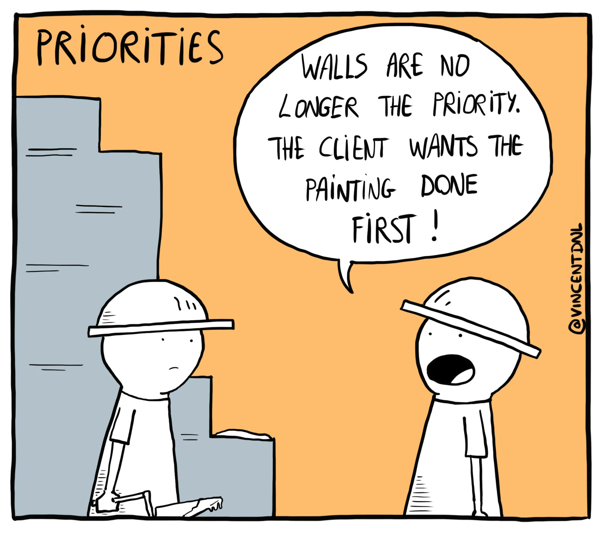
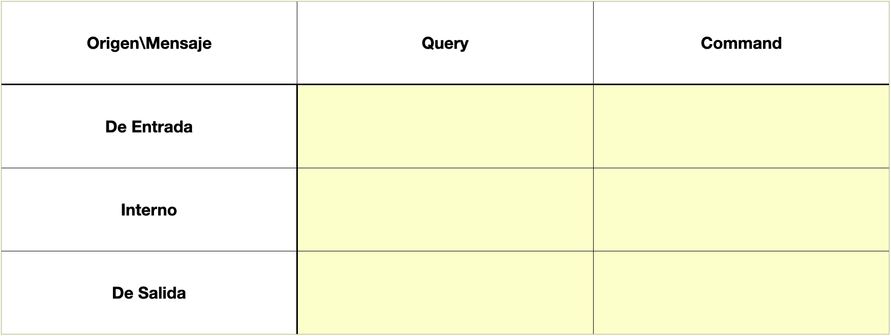
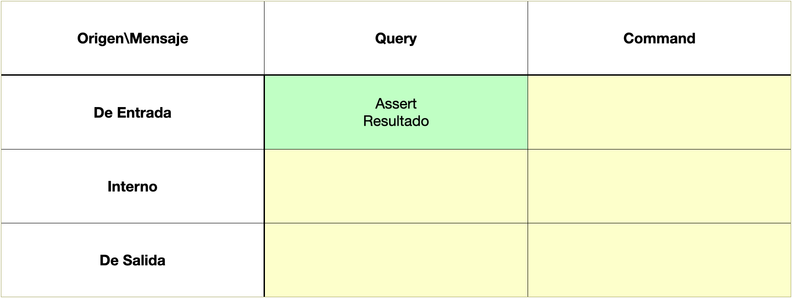
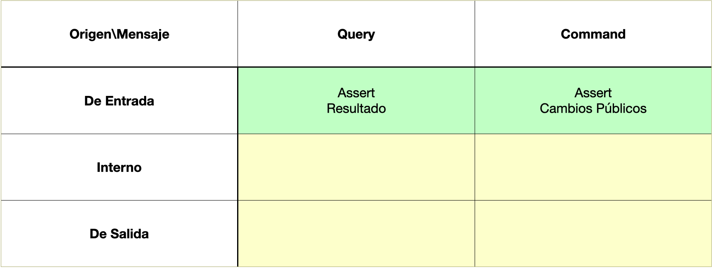
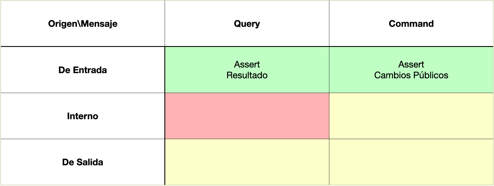
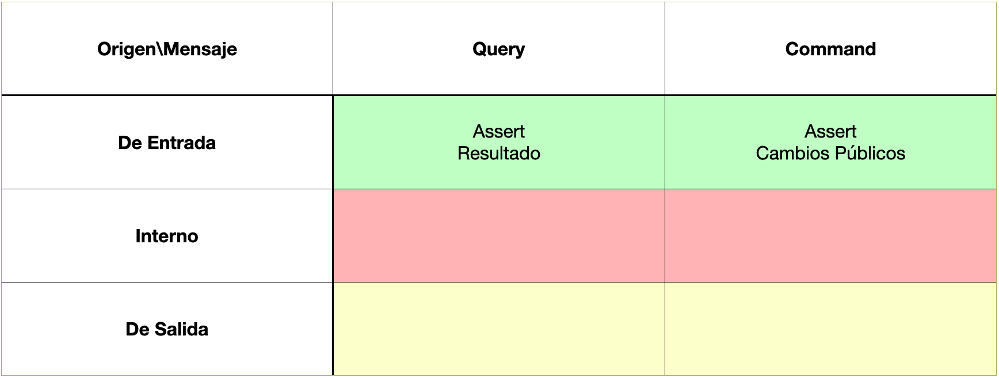
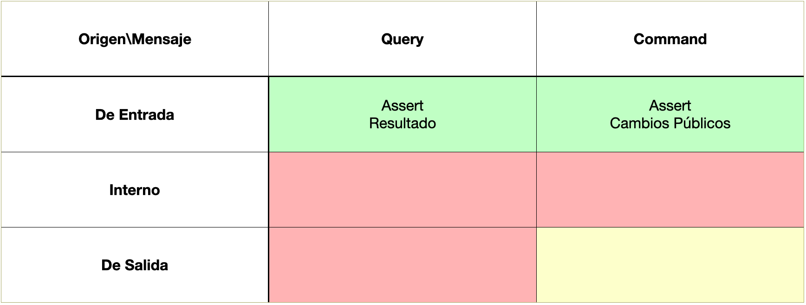
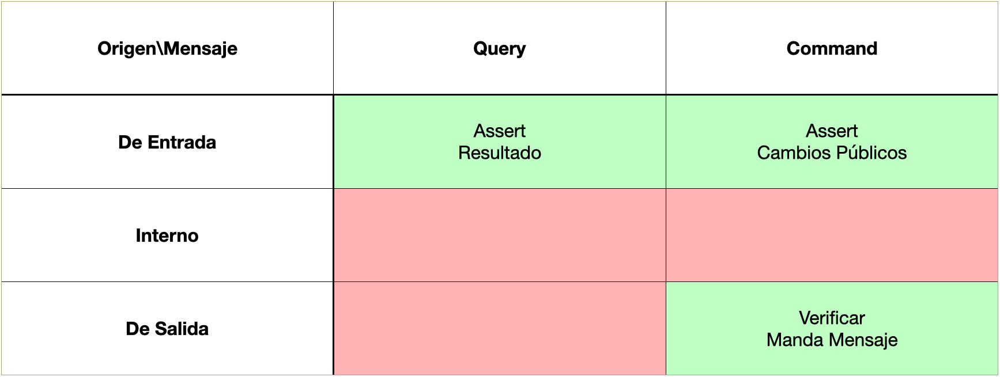

<!DOCTYPE html>
<html lang="en">
  <head>
    <meta charset="utf-8" />
    <meta name="viewport" content="width=device-width, initial-scale=1.0, maximum-scale=1.0, user-scalable=no" />

    <title>Tips & Tricks</title>
    <link rel="stylesheet" href="dist/reveal.css" />
    <link rel="stylesheet" href="dist/theme/solarized.css" id="theme" />
    <link rel="stylesheet" href="plugin/highlight/zenburn.css" />
	<link rel="stylesheet" href="css/layout.css" />
	<link rel="stylesheet" href="plugin/customcontrols/style.css">


    <script defer src="dist/fontawesome/all.min.js"></script>

	<script type="text/javascript">
		var forgetPop = true;
		function onPopState(event) {
			if(forgetPop){
				forgetPop = false;
			} else {
				parent.postMessage(event.target.location.href, "app://obsidian.md");
			}
        }
		window.onpopstate = onPopState;
		window.onmessage = event => {
			if(event.data == "reload"){
				window.document.location.reload();
			}
			forgetPop = true;
		}

		function fitElements(){
			const itemsToFit = document.getElementsByClassName('fitText');
			for (const item in itemsToFit) {
				if (Object.hasOwnProperty.call(itemsToFit, item)) {
					var element = itemsToFit[item];
					fitElement(element,1, 1000);
					element.classList.remove('fitText');
				}
			}
		}

		function fitElement(element, start, end){

			let size = (end + start) / 2;
			element.style.fontSize = `${size}px`;

			if(Math.abs(start - end) < 1){
				while(element.scrollHeight > element.offsetHeight){
					size--;
					element.style.fontSize = `${size}px`;
				}
				return;
			}

			if(element.scrollHeight > element.offsetHeight){
				fitElement(element, start, size);
			} else {
				fitElement(element, size, end);
			}		
		}


		document.onreadystatechange = () => {
			fitElements();
			if (document.readyState === 'complete') {
				if (window.location.href.indexOf("?export") != -1){
					parent.postMessage(event.target.location.href, "app://obsidian.md");
				}
				if (window.location.href.indexOf("print-pdf") != -1){
					let stateCheck = setInterval(() => {
						clearInterval(stateCheck);
						window.print();
					}, 250);
				}
			}
	};


        </script>
  </head>
  <body>
    <div class="reveal">
      <div class="slides"><section  data-markdown><script type="text/template"><!-- .slide: class="drop" data-background-image="Adjuntos/slides.eap.png" -->
<div class="" style="position: absolute; left: 0px; top: 0px; height: 700px; width: 960px; min-height: 700px; display: flex; flex-direction: column; align-items: center; justify-content: center" absolute="true">

# Testing

# Tips & Tricks
</div></script></section><section  data-markdown><script type="text/template"><!-- .slide: class="drop" -->
<div class="" style="position: absolute; left: 0px; top: 0px; height: 700px; width: 960px; min-height: 700px; display: flex; flex-direction: column; align-items: center; justify-content: center" absolute="true">

- &shy;<!-- .element: class="fragment" data-fragment-index="1" -->¿por qué?
- &shy;<!-- .element: class="fragment" data-fragment-index="2" -->¿qué?
- &shy;<!-- .element: class="fragment" data-fragment-index="3" -->¿cómo?
- &shy;<!-- .element: class="fragment" data-fragment-index="4" -->¿cuándo?
</div>

<aside class="notes"><p>porque, que y cómo vamos a ver un poco</p>
<p>¿cuándo? siempre es ideal hacerlo al mismo tiempo que el código, no waterfall ni a posteriori. Ayuda a pensar casos de testing mientras estas desarrollando.</p>
<p>Si te refieres a como empezar, recomiendo nuevas funcionalidades, escoger alguna parte dificil de comprender.</p>
<!-- .slide: data-background-image="Adjuntos/slides.eap.png" --></aside></script></section><section  data-markdown><script type="text/template"><!-- .slide: class="drop" -->
<div class="" style="position: absolute; left: 0px; top: 0px; height: 700px; width: 960px; min-height: 700px; display: flex; flex-direction: column; align-items: center; justify-content: center" absolute="true">

# Excusas

- &shy;<!-- .element: class="fragment" data-fragment-index="1" -->No tengo tiempo
- &shy;<!-- .element: class="fragment" data-fragment-index="2" -->Mi jefe no me deja
- &shy;<!-- .element: class="fragment" data-fragment-index="3" -->Código díficil de testear
- &shy;<!-- .element: class="fragment" data-fragment-index="4" -->No se comprende la importancia
</div>

<aside class="notes"><p>En varios casos es falta de conocimiento, ante esto solo me queda transmitiros lo que vengo diciendo habitualmente.</p>
<p>En cuanto al tiempo, a la larga ahorrar mucho mas</p>
<!-- .slide: data-background-image="Adjuntos/slides.eap.png" --></aside></script></section><section  data-markdown><script type="text/template"><!-- .slide: class="drop" data-background-image="Adjuntos/slides.eap.png" -->
<div class="" style="position: absolute; left: 0px; top: 0px; height: 700px; width: 960px; min-height: 700px; display: flex; flex-direction: column; align-items: center; justify-content: center" absolute="true">

# Ponernos en valor
</div></script></section><section  data-markdown><script type="text/template"><!-- .slide: class="drop" -->
<div class="" style="position: absolute; left: 0px; top: 0px; height: 700px; width: 960px; min-height: 700px; display: flex; flex-direction: column; align-items: center; justify-content: center" absolute="true">


</div>

<aside class="notes"><p>lo primero de todo es poner en valor nuestro criterio, por encima del usuario y del jefe. </p>
<p>El hormigón fresco tarda unos <strong>28 días</strong> en alcanzar la resistencia estándar. El hormigón fresco está en fase de curado durante estas cuatro semanas. El hormigón endurecido se denomina material de construcción después de 28 días, y sobre él ya si puede proceder a la construcción.</p>
<!-- .slide: data-background-image="Adjuntos/slides.eap.png" --></aside></script></section><section  data-markdown><script type="text/template"><!-- .slide: class="drop" -->
<div class="" style="position: absolute; left: 0px; top: 0px; height: 700px; width: 960px; min-height: 700px; display: flex; flex-direction: column; align-items: center; justify-content: center" absolute="true">

## ¿por qué?

- &shy;<!-- .element: class="fragment" data-fragment-index="1" -->Has terminado una funcionalidad y quieres asegurarte que funciona como esperas
- &shy;<!-- .element: class="fragment" data-fragment-index="2" -->Quieres documentar un cambio para que los que vengan detrás entiendan las razones
- &shy;<!-- .element: class="fragment" data-fragment-index="3" -->Asegurarte que los cambios de código no rompan comportamiento anterior
- &shy;<!-- .element: class="fragment" data-fragment-index="4" -->Quieres entender el comportamiento del sistema
- &shy;<!-- .element: class="fragment" data-fragment-index="5" -->Deseas saber si una librería funciona como tu esperas
</div>

<aside class="notes"><p><a href="https://medium.com/@stefan.paladuta17/theory-my-2-cent-about-software-testing-part-1-basic-intro-d765f5767a9f">https://medium.com/@stefan.paladuta17/theory-my-2-cent-about-software-testing-part-1-basic-intro-d765f5767a9f</a></p>
<!-- .slide: data-background-image="Adjuntos/slides.eap.png" --></aside></script></section><section  data-markdown><script type="text/template"><!-- .slide: class="drop" -->
<div class="" style="position: absolute; left: 0px; top: 0px; height: 700px; width: 960px; min-height: 700px; display: flex; flex-direction: column; align-items: center; justify-content: center" absolute="true">

## ¿cómo?

### Testear es complicado
</div>

<aside class="notes"><p>aparte testear es, como el desarrollo de la aplicación, un arte en si mismo.</p>
<!-- .slide: data-background-image="Adjuntos/slides.eap.png" --></aside></script></section><section  data-markdown><script type="text/template"><!-- .slide: class="drop" data-background-image="Adjuntos/slides.eap.png" -->
<div class="" style="position: absolute; left: 0px; top: 0px; height: 700px; width: 960px; min-height: 700px; display: flex; flex-direction: column; align-items: center; justify-content: center" absolute="true">

## Detectar testing mal hecho
### Señales de aviso

- Test lento
- Frágil
- Costoso
</div></script></section><section  data-markdown><script type="text/template"><!-- .slide: class="drop" data-background-image="Adjuntos/slides.eap.png" -->
<div class="" style="position: absolute; left: 0px; top: 0px; height: 700px; width: 960px; min-height: 700px; display: flex; flex-direction: column; align-items: center; justify-content: center" absolute="true">

## ¿qué?

- &shy;<!-- .element: class="fragment" data-fragment-index="1" -->Test Unitarios
- &shy;<!-- .element: class="fragment" data-fragment-index="2" -->Test de Integración
</div></script></section><section  data-markdown><script type="text/template"><!-- .slide: class="drop" data-background-image="Adjuntos/slides.eap.png" -->
<div class="" style="position: absolute; left: 0px; top: 0px; height: 700px; width: 960px; min-height: 700px; display: flex; flex-direction: column; align-items: center; justify-content: center" absolute="true">

# Test Unitarios
</div></script></section><section  data-markdown><script type="text/template"><!-- .slide: class="drop" data-background-image="Adjuntos/slides.eap.png" -->
<div class="" style="position: absolute; left: 0px; top: 0px; height: 700px; width: 960px; min-height: 700px; display: flex; flex-direction: column; align-items: center; justify-content: center" absolute="true">

# ¿Qué testear?

## Pregunta típica
</div></script></section><section  data-markdown><script type="text/template"><!-- .slide: class="drop" data-background-image="Adjuntos/slides.eap.png" -->
<div class="" style="position: absolute; left: 0px; top: 0px; height: 700px; width: 960px; min-height: 700px; display: flex; flex-direction: column; align-items: center; justify-content: center" absolute="true">

# Objeto A Testear

- Mensajes de entrada
- Mensajes internos
- Mensajes de salida
</div></script></section><section  data-markdown><script type="text/template"><!-- .slide: class="drop" -->
<div class="" style="position: absolute; left: 0px; top: 0px; height: 700px; width: 960px; min-height: 700px; display: flex; flex-direction: column; align-items: center; justify-content: center" absolute="true">

# Tipos de Mensajes

- Query 
- Command
</div>

<aside class="notes"><p>Query pregunta algo, recibe información pero no tiene efectos secundarios</p>
<p>Command solicita un cambio, no pide ningun dato</p>
<p>La combinacion de estos pueden hacer cosas mas complejas.</p>
<!-- .slide: data-background-image="Adjuntos/slides.eap.png" --></aside></script></section><section  data-markdown><script type="text/template"><!-- .slide: class="drop" data-background-image="Adjuntos/slides.eap.png" -->
<div class="" style="position: absolute; left: 0px; top: 0px; height: 700px; width: 960px; min-height: 700px; display: flex; flex-direction: column; align-items: center; justify-content: center" absolute="true">

# Query

## Devuelve algo
## No Cambia Nada
</div></script></section><section  data-markdown><script type="text/template"><!-- .slide: class="drop" data-background-image="Adjuntos/slides.eap.png" -->
<div class="" style="position: absolute; left: 0px; top: 0px; height: 700px; width: 960px; min-height: 700px; display: flex; flex-direction: column; align-items: center; justify-content: center" absolute="true">

# Command
## No devuelve nada
## Cambia algo
</div></script></section><section  data-markdown><script type="text/template"><!-- .slide: class="drop" data-background-image="Adjuntos/slides.eap.png" -->
<div class="" style="position: absolute; left: 0px; top: 0px; height: 700px; width: 960px; min-height: 700px; display: flex; flex-direction: column; align-items: center; justify-content: center" absolute="true">


</div></script></section><section  data-markdown><script type="text/template"><!-- .slide: class="drop" -->
<div class="" style="position: absolute; left: 0px; top: 0px; height: 700px; width: 960px; min-height: 700px; display: flex; flex-direction: column; align-items: center; justify-content: center" absolute="true">

# Entrada
## Query
</div>

<aside class="notes"><p>test incoming query messages by making assertions about what they send back</p>
<!-- .slide: data-background-image="Adjuntos/slides.eap.png" --></aside></script></section><section  data-markdown><script type="text/template"><!-- .slide: class="drop" data-background-image="Adjuntos/slides.eap.png" -->
<div class="" style="position: absolute; left: 0px; top: 0px; height: 700px; width: 960px; min-height: 700px; display: flex; flex-direction: column; align-items: center; justify-content: center" absolute="true">


</div></script></section><section  data-markdown><script type="text/template"><!-- .slide: class="drop" -->
<div class="" style="position: absolute; left: 0px; top: 0px; height: 700px; width: 960px; min-height: 700px; display: flex; flex-direction: column; align-items: center; justify-content: center" absolute="true">

# Entrada
## Command
</div>

<aside class="notes"><p>Test incoming command messages by making assertions about direct public side effects</p>
<!-- .slide: data-background-image="Adjuntos/slides.eap.png" --></aside></script></section><section  data-markdown><script type="text/template"><!-- .slide: class="drop" data-background-image="Adjuntos/slides.eap.png" -->
<div class="" style="position: absolute; left: 0px; top: 0px; height: 700px; width: 960px; min-height: 700px; display: flex; flex-direction: column; align-items: center; justify-content: center" absolute="true">


</div></script></section><section  data-markdown><script type="text/template"><!-- .slide: class="drop" -->
<div class="" style="position: absolute; left: 0px; top: 0px; height: 700px; width: 960px; min-height: 700px; display: flex; flex-direction: column; align-items: center; justify-content: center" absolute="true">

# Interno
## Query
</div>

<aside class="notes"><p>Queremos testear la interfaz, no queremos vincular tests a la implementacion, sino creamos esa dependencia que siempre queremos evitar</p>
<!-- .slide: data-background-image="Adjuntos/slides.eap.png" --></aside></script></section><section  data-markdown><script type="text/template"><!-- .slide: class="drop" data-background-image="Adjuntos/slides.eap.png" -->
<div class="" style="position: absolute; left: 0px; top: 0px; height: 700px; width: 960px; min-height: 700px; display: flex; flex-direction: column; align-items: center; justify-content: center" absolute="true">


</div></script></section><section  data-markdown><script type="text/template"><!-- .slide: class="drop" data-background-image="Adjuntos/slides.eap.png" -->
<div class="" style="position: absolute; left: 0px; top: 0px; height: 700px; width: 960px; min-height: 700px; display: flex; flex-direction: column; align-items: center; justify-content: center" absolute="true">

# Interno
## Command
</div></script></section><section  data-markdown><script type="text/template"><!-- .slide: class="drop" data-background-image="Adjuntos/slides.eap.png" -->
<div class="" style="position: absolute; left: 0px; top: 0px; height: 700px; width: 960px; min-height: 700px; display: flex; flex-direction: column; align-items: center; justify-content: center" absolute="true">


</div></script></section><section  data-markdown><script type="text/template"><!-- .slide: class="drop" data-background-image="Adjuntos/slides.eap.png" -->
<div class="" style="position: absolute; left: 0px; top: 0px; height: 700px; width: 960px; min-height: 700px; display: flex; flex-direction: column; align-items: center; justify-content: center" absolute="true">

# Salida
## Query
</div></script></section><section  data-markdown><script type="text/template"><!-- .slide: class="drop" data-background-image="Adjuntos/slides.eap.png" -->
<div class="" style="position: absolute; left: 0px; top: 0px; height: 700px; width: 960px; min-height: 700px; display: flex; flex-direction: column; align-items: center; justify-content: center" absolute="true">


</div></script></section><section  data-markdown><script type="text/template"><!-- .slide: class="drop" data-background-image="Adjuntos/slides.eap.png" -->
<div class="" style="position: absolute; left: 0px; top: 0px; height: 700px; width: 960px; min-height: 700px; display: flex; flex-direction: column; align-items: center; justify-content: center" absolute="true">

# Salida
## Command
</div></script></section><section  data-markdown><script type="text/template"><!-- .slide: class="drop" data-background-image="Adjuntos/slides.eap.png" -->
<div class="" style="position: absolute; left: 0px; top: 0px; height: 700px; width: 960px; min-height: 700px; display: flex; flex-direction: column; align-items: center; justify-content: center" absolute="true">


</div></script></section><section  data-markdown><script type="text/template"><!-- .slide: class="drop" -->
<div class="" style="position: absolute; left: 0px; top: 0px; height: 700px; width: 960px; min-height: 700px; display: flex; flex-direction: column; align-items: center; justify-content: center" absolute="true">

# Premisas
## FIRST

- &shy;<!-- .element: class="fragment" data-fragment-index="1" -->Fast
- &shy;<!-- .element: class="fragment" data-fragment-index="2" -->Independent
- &shy;<!-- .element: class="fragment" data-fragment-index="3" -->Repeteable
- &shy;<!-- .element: class="fragment" data-fragment-index="4" -->Self-validating
- &shy;<!-- .element: class="fragment" data-fragment-index="5" -->Timely
</div>

<aside class="notes"><p>Hacerlos rápidos nos ayuda a que nos apetezca ejecutarlos mas a menudo</p>
<p>Si no son independientes, nos cuesta más descubrir la causa del fallo o el codigo que ha insertado el error</p>
<p>Si no es repetible, por ejemplo manda correos cada vez que se ejecuta o cambia el estado de una base de datos, no podemos ejecutarlo de forma recurrente.</p>
<p>Si no se valida por si mismo y necesita labor humana para su validacion volvemos a un test manual que usa codigo.</p>
<p>si usamos TDD, indica que el test debe crearse antes del codigo, así ayudamos a que el codigo sea facilmente testable. Incluso diría que si es codigo ya en producción y se avisa de nuevo bug o funcionalidad tambien debería ser la forma de actuar.</p>
<p>Buscar el problema en el codigo, escribir el test, red y resolver.</p>
<!-- .slide: data-background-image="Adjuntos/slides.eap.png" --></aside></script></section><section  data-markdown><script type="text/template"><!-- .slide: class="drop" -->
<div class="" style="position: absolute; left: 0px; top: 0px; height: 700px; width: 960px; min-height: 700px; display: flex; flex-direction: column; align-items: center; justify-content: center" absolute="true">

# Referencias

[Sandi Metz - Rails Conf 2013 The Magic Tricks of Testing by Sandi Metz](https://www.youtube.com/watch?v=URSWYvyc42M&t=313s)

[Good Unit Tests](https://leanylabs.com/blog/good-unit-tests/)

[Integration Testing](https://blog.hubspot.com/marketing/integration-testing)
</div>

<aside class="notes"><p>Sandi Metz - Rails Conf 2013 The Magic Tricks of Testing by Sandi Metz</p>
<p>Before we close the story today you have to know something else about TDD, that is <strong>F.I.R.S.T.</strong> It is an acronym introduced by Robert C. Martin in his book “Clean Code”. What stands for F.I.R.S.T. and what does that mean?</p>
<p><a href="https://medium.com/basic-people/test-driven-development-is-red-green-blue-development-f268e2150981">https://medium.com/basic-people/test-driven-development-is-red-green-blue-development-f268e2150981</a></p>
<p><a href="https://leanylabs.com/blog/good-unit-tests/">https://leanylabs.com/blog/good-unit-tests/</a></p>
<h3 id="table-of-contents">Table of Contents</h3>
<ul>
<li><a href="https://leanylabs.com/blog/good-unit-tests/#test-small-pieces-of-code-in-isolation">Test Small Pieces of Code in Isolation</a></li>
<li><a href="https://leanylabs.com/blog/good-unit-tests/#follow-arrange-act-assert">Follow Arrange, Act, Assert</a></li>
<li><a href="https://leanylabs.com/blog/good-unit-tests/#keep-tests-short">Keep Tests Short</a></li>
<li><a href="https://leanylabs.com/blog/good-unit-tests/#make-them-simple">Make Them Simple</a></li>
<li><a href="https://leanylabs.com/blog/good-unit-tests/#cover-happy-path-first">Cover Happy Path First</a></li>
<li><a href="https://leanylabs.com/blog/good-unit-tests/#test-edge-cases">Test Edge Cases</a></li>
<li><a href="https://leanylabs.com/blog/good-unit-tests/#write-tests-before-fixing-bugs">Write Tests Before Fixing Bugs</a></li>
<li><a href="https://leanylabs.com/blog/good-unit-tests/#make-them-performant">Make Them Performant</a></li>
<li><a href="https://leanylabs.com/blog/good-unit-tests/#keep-them-stateless">Keep Them Stateless</a></li>
<li><a href="https://leanylabs.com/blog/good-unit-tests/#write-deterministic-tests">Write Deterministic Tests</a></li>
<li><a href="https://leanylabs.com/blog/good-unit-tests/#use-descriptive-names">Use Descriptive Names</a></li>
<li><a href="https://leanylabs.com/blog/good-unit-tests/#test-one-requirement-at-a-time">Test One Requirement at a Time</a></li>
<li><a href="https://leanylabs.com/blog/good-unit-tests/#favor-precise-assertions">Favor Precise Assertions</a></li>
<li><a href="https://leanylabs.com/blog/good-unit-tests/#run-tests-automatically">Run Tests Automatically</a></li>
<li><a href="https://leanylabs.com/blog/good-unit-tests/#conclusion">Conclusion</a></li>
</ul>
<p><a href="https://blog.hubspot.com/marketing/integration-testing">https://blog.hubspot.com/marketing/integration-testing</a></p>
<ol>
<li><strong>Define the scope of integration testing.</strong></li>
</ol>
<p>To kick off integration testing, you must first set the scope. This involves pinpointing which components or modules of your application should be evaluated. Then, you&#39;ll determine how they will fit together when put to the test.</p>
<p>2. <strong>Identify test scenarios.</strong></p>
<p>To progress to the next phase, you&#39;ll need to recognize and execute all feasible test scenarios. These tests must cover every conceivable collaboration between the individual components of the application.</p>
<p>3. <strong>Prepare test data.</strong></p>
<p>After the test scenarios have been outlined, generate the appropriate data that will be employed to run these tests. This test data should include all potential input conditions and must contain both valid and invalid information.</p>
<p>4. <strong>Create test cases.</strong></p>
<p>Develop test cases for each scenario using the given data and scenarios. Establish clear inputs, expected outcomes, and pass/fail criteria in every case. Make sure you have properly outlined all components to ensure the successful completion of tests.</p>
<p>5. <strong>Set up the test environment.</strong></p>
<p>It&#39;s time to get your testing environment ready. This consists of building a standalone setting for examining, customizing the application and infrastructural constituent parts, and ultimately deploying the app in the test space.</p>
<p>6. <strong>Execute test cases.</strong></p>
<p>Carry out the test cases that you created. It’s important to follow the same order of your identified test scenarios in step two when running each test.</p>
<p>7. <strong>Monitor and analyze test results.</strong></p>
<p>Analyze and assess the test results with keen scrutiny. Unearth any inefficiencies or problems that surface through testing, then sort them based on their gravity and how they influence the application&#39;s performance.</p>
<p>8. <strong>Report and track issues.</strong></p>
<p>Always report and follow up on any issues identified during testing. This guarantees that all concerns are addressed before the application is moved into production.</p>
<p>9. <strong>Retest and verify.</strong></p>
<p>After all conflicts have been rectified, rerun the tests in those areas to make sure that the corrections are successful. Confirm each test runs properly and that the application is acting as anticipated.</p>
<p>10. <strong>Sign off and release.</strong></p>
<p>After all tests have been successfully finished, it’s time to approve the integration testing phase. You can then release the application for public consumption.</p>
<!-- .slide: data-background-image="Adjuntos/slides.eap.png" --></aside></script></section></div>
    </div>

    <script src="dist/reveal.js"></script>

    <script src="plugin/markdown/markdown.js"></script>
    <script src="plugin/highlight/highlight.js"></script>
    <script src="plugin/zoom/zoom.js"></script>
    <script src="plugin/notes/notes.js"></script>
    <script src="plugin/math/math.js"></script>
	<script src="plugin/mermaid/mermaid.js"></script>
	<script src="plugin/chart/chart.min.js"></script>
	<script src="plugin/chart/plugin.js"></script>
	<script src="plugin/customcontrols/plugin.js"></script>

    <script>
      function extend() {
        var target = {};
        for (var i = 0; i < arguments.length; i++) {
          var source = arguments[i];
          for (var key in source) {
            if (source.hasOwnProperty(key)) {
              target[key] = source[key];
            }
          }
        }
        return target;
      }

	  function isLight(color) {
		let hex = color.replace('#', '');

		// convert #fff => #ffffff
		if(hex.length == 3){
			hex = `${hex[0]}${hex[0]}${hex[1]}${hex[1]}${hex[2]}${hex[2]}`;
		}

		const c_r = parseInt(hex.substr(0, 2), 16);
		const c_g = parseInt(hex.substr(2, 2), 16);
		const c_b = parseInt(hex.substr(4, 2), 16);
		const brightness = ((c_r * 299) + (c_g * 587) + (c_b * 114)) / 1000;
		return brightness > 155;
	}

	var bgColor = getComputedStyle(document.documentElement).getPropertyValue('--r-background-color').trim();
	var isLight = isLight(bgColor);

	if(isLight){
		document.body.classList.add('has-light-background');
	} else {
		document.body.classList.add('has-dark-background');
	}

      // default options to init reveal.js
      var defaultOptions = {
        controls: true,
        progress: true,
        history: true,
        center: true,
        transition: 'default', // none/fade/slide/convex/concave/zoom
        plugins: [
          RevealMarkdown,
          RevealHighlight,
          RevealZoom,
          RevealNotes,
          RevealMath.MathJax3,
		  RevealMermaid,
		  RevealChart,
		  RevealCustomControls,
        ],


    	allottedTime: 120 * 1000,

		mathjax3: {
			mathjax: 'plugin/math/mathjax/tex-mml-chtml.js',
		},
		markdown: {
		  gfm: true,
		  mangle: true,
		  pedantic: false,
		  smartLists: false,
		  smartypants: false,
		},

		mermaid: {
			theme: isLight ? 'default' : 'dark',
		},

		customcontrols: {
			controls: [
			]
		},
      };

      // options from URL query string
      var queryOptions = Reveal().getQueryHash() || {};

      var options = extend(defaultOptions, {"width":960,"height":700,"margin":0.04,"controls":false,"progress":false,"slideNumber":false,"transition":"slide","transitionSpeed":"default"}, queryOptions);
    </script>

    <script>
      Reveal.initialize(options);
    </script>
  </body>

  <!-- created with Advanced Slides -->
</html>
